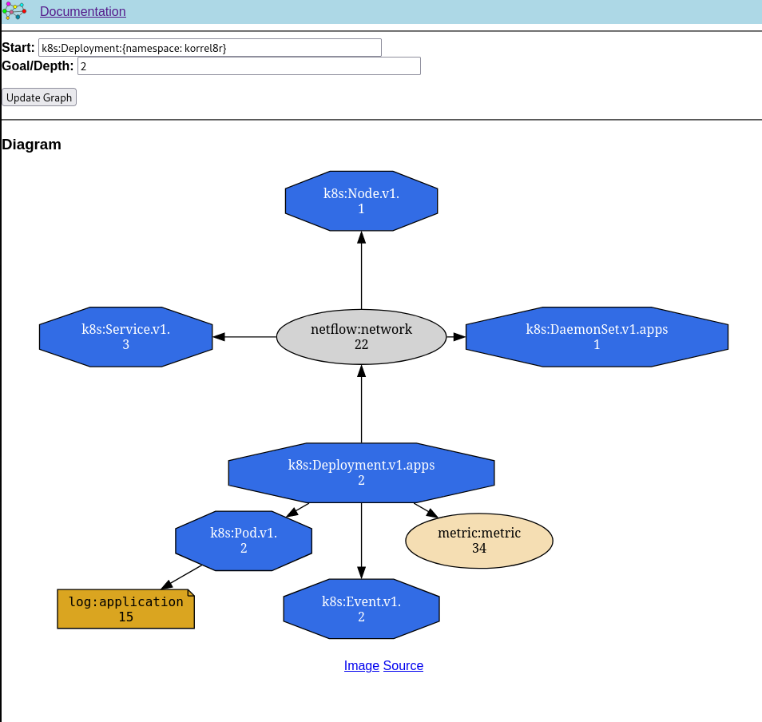

Navigate relationships between cluster resources and observability signals.
What is Korrel8r?
Observability for Kubernetes clusters often involves multiple systems; logs in Loki, metrics in Prometheus, traces in Tempo, events in the API server, alerts in Alertmanager and so on. Each system has different data models, query languages, and APIs. When troubleshooting, you need to piece together information from multiple sources.
Korrel8r is a rule-based correlation engine that automatically discovers and graphs related resources and observability signals across multiple data stores. Given any starting point - an alert, a service or deployment that is in trouble etc - korrel8r will search for related data, potentially following multiple relationships between objects in different data stores.
- Goal Search
-
Find paths from starting objects to a specific type of target data. For example: "Find all logs related to this Alert" might cause korrel8r to connect the alert to related deployments, the deployments to their pods, and finally the pods to logs.
- Neighborhood Search
-
Find all data reachable within N steps from starting objects. For example: "Show me everything related to this Pod within 2 steps" might return deployments and services that own the Pod, logs from the pods containers, metrics describing the Pod, network flows with the Pod as an endpoint and so on.
Key Capabilities
-
Universal correlation: Connects data across multiple formats, stores, and query languages (OTEL, Prometheus/PromQL, Loki/LogQL, etc.)
-
Multiple stores: Relationships can span data in Prometheus, Loki, Alertmanager, Kubernetes API server, and more
-
Extensible rules: Configurable YAML rules define how different data types relate to each other
-
Extensible domains: Add new domains to handle new signal types, query languages, and data stores
-
Flexible deployment: Deploy as a REST service or use from the command line
Who Uses Korrel8r
-
Cluster administrators, SREs, and developers who need to troubleshoot issues across complex Kubernetes environments
-
Observability tool builders who want to display and manipulate correlation graphs
-
Integrated solutions for example the OpenShift troubleshooting panel
About OpenTelemetry
The OpenTelemetry project (OTEL) defines standard vocabularies for traces, metrics, and logs. Korrel8r can correlate OTEL data with other data formats for observability signals.
Korrel8r complements OTEL by:
-
Bridging between OTEL and non-OTEL systems
-
Providing correlation rules between different signal types
-
Supporting data types beyond the current OTEL specification (like Kubernetes events or network flows)
-
Working with any query language or storage system
Getting Started
Korrel8r can run in different environments depending on your needs:
-
In-cluster: Deployed as a Kubernetes service, recommended for production.
-
Out-of-cluster:
-
Command line: direct execution of queries for automated scripts or tests.
-
Service: useful for testing, connect to cluster resources via routes.
See Configuration for details on configuring stores and rules.
|
Authentication: Korrel8r uses Bearer Tokens to authenticate with cluster stores.
|
Installation Options
Cluster Observability Operator (recommended)
The Red Hat Cluster Observability Operator automatically installs and configures Korrel8r on Red Hat OpenShift clusters, configured to connect to the available stores and the console. This is the easiest way to get up and running.
Direct Deployment
This deploys korrel8r in the namespace korrel8r with a configuration suitable for Red Hat OpenShift clusters.
Modify configmap/korrel8r to change the configuration.
oc apply -k github.com/korrel8r/korrel8r/config/?version=mainoc apply -k github.com/korrel8r/korrel8r/config/?version=vX.Y.ZAccessing the Service
To access Korrel8r from outside the cluster, create a route:
oc apply -k github.com/korrel8r/korrel8r/config/route?version=main
export KORREL8R_URL=$(oc get route/korrel8r -n korrel8r -o template='https://{{.spec.host}}')
curl --oauth2-bearer $(oc whoami -t) http://$KORREL8R_URL/api/v1alpha1/domainsRunning Outside the Cluster
You can run Korrel8r locally for development and testing. This connects to cluster stores via routes or ingress.
go install github.com/korrel8r/korrel8r/cmd/korrel8r@latest
korrel8r --help # View available commandscurl -o korrel8r.yaml https://raw.githubusercontent.com/korrel8r/korrel8r/main/etc/korrel8r/openshift-route.yamlkorrel8r -v2 --config korrel8r.yaml web --http=localhost:8080Your local Korrel8r service is now available at http://localhost:8080.
Using Korrel8r
Once your Korrel8r service is running, it provides a REST API. You can interact with it in several ways:
-
Command line client (
korrel8rcli) - Purpose-built for Korrel8r -
Direct HTTP request - Direct HTTP calls using
curlor similar tools -
OpenShift Console - Integrated troubleshooting panel
-
Web browser - Built-in visualization (experimental)
|
Clients require a Bearer Token to authenticate. If you are logged in to a cluster, you can find your bearer token like this: |
Command Line Client (korrel8rcli)
The korrel8rcli client provides a simple way to explore correlations from the command line.
go install github.com/korrel8r/client/cmd/korrel8rcli@latest
korrel8rcli --help # View available commandskorrel8rcli automatically uses your cluster login credentials.
Replace $KORREL8R_URL with your URL:
Checking Available Domains
First, check what data sources are available in your cluster:
korrel8rcli -u $KORREL8R_URL domainsThis shows all configured domains and their connection status. Example output:
- name: k8s # Kubernetes resources
stores: [...]
- name: log # Application logs (Loki)
stores: [...]
- name: metric # Prometheus metrics
stores: [...]
- name: alert # Prometheus alerts
stores: [...]
- name: trace # Distributed traces
stores: [...]Finding Related Data
Neighborhood Search: Find all data related to a specific resource:
# Find everything related to a deployment
korrel8rcli -u $KORREL8R_URL neighbors --query 'k8s:Deployment:{namespace: korrel8r}'
# Find everything related to a specific pod
korrel8rcli -u $KORREL8R_URL neighbors --query 'k8s:Pod:{namespace: default, name: my-pod}'Goal Search: Find specific types of related data:
# Find all logs related to a deployment
korrel8rcli -u $KORREL8R_URL goals --start 'k8s:Deployment:{namespace: korrel8r}' --goal 'log:application'
# Find all alerts related to a namespace
korrel8rcli -u $KORREL8R_URL goals --start 'k8s:Namespace:{name: production}' --goal 'alert:alert'Web Visualization (Experimental)
|
This feature is experimental and may change in future versions. |
The korrel8rcli tool includes a web interface for visualizing correlation graphs:
korrel8rcli web -u $KORREL8R_URL --addr :9090Open http://localhost:9090 in your browser. You can:
- Enter a query in the "Start" box (e.g., k8s:Pod:{namespace: default})
- Specify search depth (for neighborhood) or target class (for goal search)
- View interactive correlation graphs

Direct REST API Access
You can use curl or any HTTP client to directly interact with the Korrel8r REST API:
# Get available domains
curl --oauth2-bearer $(oc whoami -t) $KORREL8R_URL/api/v1alpha1/domains
# Perform a neighborhood search
curl --oauth2-bearer $(oc whoami -t) \
"$KORREL8R_URL/api/v1alpha1/graphs/neighbors?depth=2&query=k8s:Pod:{namespace:default}"See the complete REST API Reference for all available endpoints.
OpenShift Console Integration
The Red Hat OpenShift Console includes a troubleshooting panel that uses Korrel8r to display clickable correlation graphs. When viewing resources in the console, you can navigate between related logs, metrics, alerts, and other observability data.
Data Access Client
Korrel8r can be used as a client to directly access data from any of the stores it can connect to. There are existing clients for most korrel8r domains, such as promcli (alert, metric), logcli (log), kubectl (k8s) etc.
Korrel8r does not have all the features of every native client, but it can be useful as a simplified uniform client.
-
A single tool for all the supported stores.
-
Can run as a command line tool, or deploy as a service with REST and MCP APIs.
-
As a service it provides token-forwarding to integrates securly with Kubernetes and MCP tools.
-
Uses the same well-known native query languages as native tools (e.g. PromQL or LogQL).
-
Korrel8r queries just add a prefix to native query strings.
The output format of korrel8r differs slightly from some native tool output.
Troubleshooting
|
You can increase the verbosity of korrel8r logging at run time using the
|
korrel8rcli config --set-verbose=9curl --oauth2-bearer $(oc whoami -t) -X PUT http://localhost:8080/api/v1alpha1/config?verbose=9How Korrel8r Works
Korrel8r organizes observability data into domains, and uses rules to navigate between them.
Domains organize data
A domain represents one type of signal or resource. For example:
-
k8sdomain: Kubernetes resources (Pods, Services, Deployments, etc.) -
logdomain: Application and system logs -
metricdomain: Prometheus metrics -
tracedomain: Distributed traces -
alertdomain: Prometheus alerts
Available domains are described in the Domain Reference.
Each domain defines the following abstractions, allowing Korrel8r to treat domains uniformly:
- Object
-
Individual data items returned by queries, for example a specific Pod, log entry, metric time series, trace span, etc. Signals and resources are all considered "objects".
- Store
-
A backend service that holds the data (Kubernetes API, Prometheus, Loki, etc.)
- Class
-
A specific type of data within a domain. Class names have the format
domain:class.
Examples:k8s:Pod,k8s:Deployment,log:application,trace:span - Query
-
A request for data, formatted as
domain:class:selector. The selector uses the native query language of the underlying store.
Examples:-
k8s:Pod:{namespace: "default"}(Kubernetes resource selector) -
log:application:{.kubernetes.namespace.name="default"}(LogQL query) -
trace:span:{.k8s.namespace.name="foobar"}(Tempo query)
-
Rules connect data
Rules express relationships between classes, possibly in different domains.
For example:
- "Pods belong to a Deployment" - relates k8s:Pod to k8s:Deployment
- "Pods generate logs" - relates k8s:Pod to log:application
- "Applications emit metrics" - relates k8s:Pod to metric:metric
Rules are templates that generate a goal query using data from a start object. The start and goal can be different classes, possibly from different domains. If a rule cannot be applied to an object it may return a blank string, or raise an error.
The set of rules forms a graph connecting all the classes of data that korrel8r knows about. Korrel8r works by traversing this graph: applying rules to some initial objects, executing the resulting queries, retrieving more objects and so on.
Configuration
Korrel8r loads configuration from a file or URL specified by the --config option:
korrel8r --config <file_or_url>The Korrel8r project provides example configuration files. You can download them or use them directly via URL.
- openshift-route.yaml
-
Run korrel8r outside the cluster, connect to stores via routes:
- openshift-svc.yaml
-
Used to run korrel8r as an in-cluster service, connect to stores via service URLs.
The configuration is a YAML file with the following sections:
include
include:
- "path_or_url"stores
stores:
- domain: "domain_name" (1)
# Domain-specific fields (2)| 1 | Domain name of the store (required). |
| 2 | Domain-specific fields for connection parameters. See Domain Reference. |
Every entry in the stores section has a domain field to identify the domain.
Other fields depend on the domain, see Domain Reference.
Store fields may contain templates that expand to URLs.
stores:
- domain: log
lokiStack: <-
{{$r := get "k8s:Route.route.openshift.io/v1:{namespace: openshift-logging, name: logging-loki}" -}} (1)
https://{{ (first $r).Spec.Host -}} (2)| 1 | Get a list of routes in "openshift-logging" named "logging-loki". |
| 2 | Use the .Spec.Host field of the first route as the host for the store URL. |
rules
rules:
- name: "rule_name" (1)
start: (2)
domain: "domain_name"
classes:
- "class_name"
goal: (3)
domain: "domain_name"
classes:
- "class_name"
result:
query: "query_template" (4)| 1 | Name identifies the rule in graphs and for debugging. |
| 2 | Start objects for this rule must belong to one of the classes in the domain. |
| 3 | Goal queries generated by this rule may must retrieve one of the classes in the domain. |
| 4 | Result queries are generated by executing the query {go-template}` with the start object as context. |
Korrel8r comes with a comprehensive set of rules by default, but you can modify them or add your own.
A rule has the following key elements:
-
A set of start classes. The rule can apply to objects belonging to one of these classes.
-
A set of goal classes. The rule can generate queries for any of these classes.
-
A Go template to generate a goal query from a start object.
The query template should generate a string of the form:
<domain-name>:<class-name>:<query-details>
The query-details part depends on the domain, see Domain Reference
aliases
aliases:
- name: "alias_name" (1)
domain: "domain_name" (2)
classes: (3)
- "class_name"| 1 | Alias name can be used in rule definitions wherever a class name is allowed. |
| 2 | Domain for classes in this alias. |
| 3 | Classes belonging to this alias. |
About Templates
Korrel8r rules and store configuration can include Go templates.
This is the same templat syntax as the kubectl command with the --output=template option.
|
Korrel8r provides additional template functions to simplify writing rules and configurations:
-
The sprig library of general purpose template functions is always available.
-
Some domains (for example the [_k8s_domain]) provide domain-specific functions, see the Domain Reference.
-
The following function is available for store configurations:
- query
-
Takes a single argument, a korrel8r query string. Executes the query and returns the result as a
[]any. May return an error.Example: Query the k8s cluster for a route, extract the "host" field.{{(query "k8s:Route.route.openshift.io:{namespace: netobserv, name: loki}" | first).spec.host}}
Domain Reference
alert
Domain alert is a korrel8r domain for Prometheus/AlertManager alerts.
Classes
alert:alert
Query
Selector is one of the following:
-
JSON object with alert label field names and matching label values.
-
Array of objects as above, gets alerts that match any object in the array.
Examples:
alert:alert:{"container":"kube-rbac-proxy-main","namespace":"openshift-logging"}
alert:alert:[{"alertname":"alert1"},{"alertname":"alert2"}]
Store
A client of Prometheus and/or AlertManager. Store configuration fields:
domain: alert metrics: PROMETHEUS_URL alertmanager: ALERTMANAGER_URL
At least one of the fields "metrics" or "alertmanager" must be present.
incident
Domain incident is a korrel8r domain for cluster health incidents.
For more about incidents see the cluster\-health\-analyzer.
Classes
incident:incident
Object
An incident object contains id and mapping to the sources. Alert is the only supported source type at present.
Query
Query selectors are JSON objects.
Getting an incident by ID:
incident:incident:{"id":"id-of-the-incident"}
Using alert labels to get a corresponding incident:
incident:incident:{"alertLabels":{"alertname":"AlertmanagerReceiversNotConfigured","namespace":"openshift-monitoring"}}
k8s
Domain k8s is a korrel8r domain for Kubernetes resources.
Classes
Each Kind of kubernetes resource is a class. Class names have the format:
k8s:KIND[.VERSION][.GROUP]
Missing VERSION implies "v1", if present VERSION must follow the Kubernetes version patterns. Missing GROUP implies the core group.
Examples:
k8s:Pod k8s:Pod.v1 k8s:Deployment.apps k8s:Deployment.v1.apps k8s:Route.v1.route.openshift.io
Object
A map of JSON kubernetes field names and Go values. Rule templates should use the JSON (lowerCase) field names, not the UpperCase Go field names.
Query
JSON selector with the following fields:
-
namespace: namespace containing the resource
-
name: name of resource
-
labels: label selector object for metadata labels - { "label": "value", … }
-
fields: field selector object - { "field": "value", … }
Examples:
k8s:Pod.v1:{"namespace":"some-namespace", "name":"some-name"}
k8s:Deployment.v1:{"labels":{"app":"my-application"}, "namespace":"some-namespace" }
Store
The k8s domain automatically connects to the currently logged-in kubectl cluster. No additional configuration is needed.
stores:
domain: k8s
Template Functions
The following template functions are available to rules.
k8sClass Takes string arguments (apiVersion, kind). Returns the korrel8r.Class implied by the arguments, or an error. k8sIsNamespaced Takes a k8s Class argument, returns true if the class is a namespace-scoped resource.
log
Domain log is a korrel8r domain for application, infrastructure, and audit logs.
Logs can be stored on the cluster in LokiStack or in an external Loki server. They can also be retrieved directly from the Kubernetes API server. Direct API server access does not provide long-term log storage, but it gives short-term access when there is no long term log store available.
Classes
log:application log:infrastructure log:audit
Object
A log object is a map of attributes with string keys and values. Attribute names contain only ASCII letters, digits, underscores, and colons (required for Loki labels). Other characters are replaced with "_".
For stored logs: Loki stream labels and structured metadata labels become attributes. If the log body is a JSON object, all nested field paths are flattened into attribute names.
For direct logs: the pod, namespace, and label meta-data are added as attributes using the same label names as for stored logs.
Special attributes:
-
body: original log message.
-
timestamp: time the log was produced, if known, in RFC3339 format.
-
observed_timestamp: time the log was first stored or recorded, in RFC3339 format.
Viaq and OTEL attributes
The openshift logging collector can store logs in two formats:
-
Viaq: legacy format with attributes like: "kubernetes_namespace_name", "kubernetes_pod_name"
-
OTEL: new standard format with attributes like: "k8s_namespace_name", "k8s_pod_name". Note the use of "_" rather than "." to give legal Loki label names. Otherwise these names are as given in the OTEL specification.
For stored logs, korrel8r returns whatever format has been stored in Loki.
For direct logs, both Viaq and OTEL attributes are included to ease migration.
Query
There are two types of query selector:
-
Direct container selector: The same JSON selector used in k8s queries, with an additional "container" field.
-
LogQL expression: LogQL queries can only be used to retrieve stored logs.
Container selectors
Container selector fields (see k8s domain for more detail), all fields are optional:
-
namespace
-
name
-
labels
-
fields
-
containers: array of container names, only get logs from these containers.
If stored logs are available, the container selector is automatically translated into an equivalent LogQL expression.
Examples:
log:application:{ "namespace": "something", "labels":{"app": "myapp"}, "containers":["foo", "bar"]}
log:infrastructure:{ "namespace": "openshift-kube-apiserver", "containers":["kube-apiserver"]}
LogQL queries
Selector is a LogQL expression, for example:
log:infrastructure:{kubernetes_namespace_name="openshift-cluster-version", kubernetes_pod_name=~".*-operator-.*"}
Viaq and OTEL in queries
When translating container selectors into LogQL, Korrel8r currently uses Viaq attributes. This works with existing deployments and with the early support for OTEL logging, which include backward-compatible Viaq labels.
Korrel8r will be updated to use OTEL directly in future.
Store Configuration
domain: log lokiStack: https://URL_OF_DEFAULT_LOKISTACK direct: true
Log queries work as follows:
-
If lokiStack is set, try to connect to the URL and retrieve stored logs.
-
If direct is true and lokiStack get fails (or lokiStack is not set): use the API server directly.
At least one of lokiStack and direct must be set.
Template functions
The following functions can be used in rule templates when the log domain is available:
-
logTypeForNamespace: Takes a namespace string, returns the log type for logs in that namespace; "application" or "infrastructure"
-
logSafeLabel: Replace all characters other than alphanumerics, '' and ':' with ''.
-
logSafeLabels: Takes a map[string]string argument. Returns a map where each key is replaced by the result of logSafeLabel.
metric
Domain metric is a korrel8r domain for Prometheus metrics.
Classes
metric:metric
Object
A [Metric] is a time series identified by a label set. Korrel8r only uses labels for correlation, it does not use sample values. If a korrel8r search has time constraints, then metrics with no values that meet the constraint are ignored.
Query
Selector is a PromQL query string.
Korrel8r uses metric labels for correlation, it does not use time-series data values. The PromQL expression is parsed to extract the label matchers for the series it refers to.
Examples:
metric:metric:kube_pod_info{namespace="default"}
metric:metric:{namespace="tracing-app-k6",pod="k6-tracing-564cf6dc8b-hpxd2"}
mock
Mock domain.
netflow
Domain netflow is a korrel8r domain for network flow data.
Classes
netflow:network
Query
Selector is a LogQL query string. Examples:
netflow:network:{SrcK8S_Type="Pod", SrcK8S_Namespace="myNamespace"}
netflow:network:{DstK8S_Namespace="openshift-apiserver", DstK8S_OwnerName="apiserver"}
Store
To connect to a netflow lokiStack store use this configuration:
domain: netflow lokistack: URL_OF_LOKISTACK_PROXY
To connect to plain loki store use:
domain: netflow loki: URL_OF_LOKI
trace
Domain trace is a korrel8r domain for OpenTelemetry traces.
Classes
trace:span
Object
Represents a span. A trace is a set of spans with the same trace-id, there is no explicit class representing a trace.
Query
Selector has two forms:
-
TraceQL query string
-
A list of trace IDs.
A TraceQL query can select spans from many traces. Example:
trace:span:{resource.k8s.namespace.name="korrel8r"}
A trace-id query is a list of hexadecimal trace IDs. It returns all the spans included by each trace. Example:
trace:span:a7880cc221e84e0d07b15993358811b7,b7880cc221e84e0d07b15993358811b7
Store
The trace domain accepts an optional "tempoStack" field with a URL to connect.
stores:
domain: trace
tempoStack: "https://url-of-tempostack"
Korrel8r REST API
Introduction
Korrel8r correlates observability signals and resources in a Kubernetes cluster. It connects data from different domains (logs, metrics, alerts, traces, Kubernetes resources) by following correlation rules to build a graph of related objects. Korrel8r creates a separate session for each user with a unique HTTP Authorization header. Configuration changes, console state, and store connections are isolated per session. Requests without an Authorization header share a single default session.
Endpoints
Configure
setConfig
PUT /config
Change configuration settings at runtime.
Description
Modify selected configuration settings (e.g. log verbosity) on a running service.
Parameters
Query Parameters
| Name | Description | Required | Default | Pattern |
|---|---|---|---|---|
verbose |
Verbose level for logging. |
- |
null |
Content Type
-
application/json
Console
consoleEvents
GET /console/events
SSE event stream of console display updates from an agent.
Description
Updates are triggered by update requests from MCP tool show_in_console. The MCP client must have the same session (Authorization header) as the REST client.
Content Type
-
text/event-stream
Responses
| Code | Message | Datatype |
|---|---|---|
200 |
SSE stream where each event's data field contains a JSON-encoded Console object. |
setConsole
PUT /console
Make console state available to an agent.
Description
Store console state so an agent can read it via MCP tool get_console. The MCP client must have the same session (Authorization header) as the REST client.
Parameters
Body Parameter
| Name | Description | Required | Default | Pattern |
|---|---|---|---|---|
request |
Parameters for the updated console display. Console |
X |
Content Type
-
application/json
Responses
| Code | Message | Datatype |
|---|---|---|
200 |
Console display updated successfully |
|
400 |
invalid parameters |
Correlate
graphGoals
POST /graphs/goals
Create a correlation graph from start objects to goal queries.
Description
Specify a set of start objects, as queries or serialized objects, and a goal class. Returns a graph containing all paths leading from a start object to a goal object.
Parameters
Body Parameter
| Name | Description | Required | Default | Pattern |
|---|---|---|---|---|
request |
Search from start to goal classes. Goals |
X |
Query Parameters
| Name | Description | Required | Default | Pattern |
|---|---|---|---|---|
options |
Options controlling the form of the returned graph. |
- |
null |
Content Type
-
application/json
Responses
| Code | Message | Datatype |
|---|---|---|
200 |
OK |
|
400 |
invalid parameters |
|
404 |
result not found |
graphNeighbors
POST /graphs/neighbors
Create a neighborhood graph around a start object to a given depth.
Description
Specify a set of start objects, as queries or serialized objects, and a depth for the neighborhood search. Returns a graph of all paths with depth or less edges leading from start objects.
Parameters
Body Parameter
| Name | Description | Required | Default | Pattern |
|---|---|---|---|---|
request |
Search from start for neighbors. Neighbors |
X |
Query Parameters
| Name | Description | Required | Default | Pattern |
|---|---|---|---|---|
options |
Options controlling the form of the returned graph. |
- |
null |
Content Type
-
application/json
Responses
| Code | Message | Datatype |
|---|---|---|
200 |
OK |
|
400 |
invalid parameters |
|
404 |
result not found |
graphNeighbours
POST /graphs/neighbours
Create a neighborhood graph around a start object to a given depth.
Description
Specify a set of start objects, as queries or serialized objects, and a depth for the neighborhood search. Returns a graph of all paths with depth or less edges leading from start objects.
Parameters
Body Parameter
| Name | Description | Required | Default | Pattern |
|---|---|---|---|---|
request |
Search from start for neighbors. Neighbors |
X |
Query Parameters
| Name | Description | Required | Default | Pattern |
|---|---|---|---|---|
options |
Options controlling the form of the returned graph. |
- |
null |
Content Type
-
application/json
Responses
| Code | Message | Datatype |
|---|---|---|
200 |
OK |
|
400 |
invalid parameters |
|
404 |
result not found |
listGoals
POST /lists/goals
Create a list of goal nodes related to a starting point.
Description
Specify a set of start objects, as queries or serialized objects, and a goal class. Returns a list of all objects of the goal class that can be reached from a start object.
Parameters
Body Parameter
| Name | Description | Required | Default | Pattern |
|---|---|---|---|---|
request |
Search from start to goal classes. Goals |
X |
Return Type
array[Node]
Content Type
-
application/json
Query
listDomainClasses
GET /domain/{domain}/classes
Get the list of classes for a domain.
Description
Returns a list of class names for the specified domain.
Parameters
Path Parameters
| Name | Description | Required | Default | Pattern |
|---|---|---|---|---|
domain |
Name of the domain to list classes for |
X |
null |
Content Type
-
application/json
listDomains
GET /domains
Get the list of correlation domains.
Description
Returns a list of Korrel8r domains and the stores configured for each domain.
Return Type
array[Domain]
Content Type
-
application/json
objects
GET /objects
Execute a query, returns a list of JSON objects.
Description
Execute a single Korrel8r 'query' and return the list of serialized objects found. Does not perform any correlation actions.
Parameters
Query Parameters
| Name | Description | Required | Default | Pattern |
|---|---|---|---|---|
query |
Query string. |
X |
null |
/:[^:]:[^:]+/ |
constraint |
Constrains the objects that will be included in results. |
- |
null |
Content Type
-
application/json
Models
Console
State of the user's graphical console display (e.g. OpenShift web console).
| Field Name | Required | Nullable | Type | Description | Format |
|---|---|---|---|---|---|
view |
String |
The main console view displays the results of this query. |
|||
search |
The troubleshooting panel displays the results of this correlation search. |
Constraint
Constrains the objects that will be included in search results.
| Field Name | Required | Nullable | Type | Description | Format |
|---|---|---|---|---|---|
start |
Date |
Ignore objects with timestamps before this start time. |
date-time |
||
end |
Date |
Ignore objects with timestamps after this end time. |
date-time |
||
limit |
Integer |
Limit total number of objects per query. |
Domain
Domain configuration information.
| Field Name | Required | Nullable | Type | Description | Format |
|---|---|---|---|---|---|
name |
X |
String |
Name of the domain. |
||
description |
String |
Brief description of the domain. |
|||
stores |
List of Store |
Stores configured for the domain. |
Edge
Directed edge in the result graph, from Start to Goal classes.
| Field Name | Required | Nullable | Type | Description | Format |
|---|---|---|---|---|---|
start |
X |
String |
Class name of the start node. |
||
goal |
X |
String |
Class name of the goal node. |
||
rules |
List of Rule |
Set of rules followed along this edge. |
Error
Error result containing an error message.
| Field Name | Required | Nullable | Type | Description | Format |
|---|---|---|---|---|---|
error |
X |
String |
Error message. |
Goals
Parameters for a goal-directed correlation search. Finds paths from start objects to goal classes.
| Field Name | Required | Nullable | Type | Description | Format |
|---|---|---|---|---|---|
goals |
X |
List of [string] |
Goal classes in DOMAIN:CLASS format, e.g. log:application, alert:alert |
||
start |
X |
Starting point for the search. |
Graph
Graph resulting from a correlation search.
| Field Name | Required | Nullable | Type | Description | Format |
|---|---|---|---|---|---|
edges |
List of Edge |
List of graph edges. |
|||
nodes |
List of Node |
List of graph nodes. |
GraphGoalsOptionsParameter
Options controlling the form of the returned graph.
| Field Name | Required | Nullable | Type | Description | Format |
|---|---|---|---|---|---|
rules |
Boolean |
If true include rule names in graph edges. |
|||
results |
Boolean |
If true include full JSON results with each Query. |
|||
errors |
Boolean |
If true include non-fatal error messages. |
Neighbors
Parameters for a neighborhood correlation search. Finds all objects reachable from the start by following correlation rules up to the maximum depth.
| Field Name | Required | Nullable | Type | Description | Format |
|---|---|---|---|---|---|
depth |
X |
Integer |
Maximum number of correlation steps to follow from the start. Depth 1 returns direct correlations only. |
||
start |
X |
Starting point for the search. |
Node
Node in the result graph, contains results for a single class.
| Field Name | Required | Nullable | Type | Description | Format |
|---|---|---|---|---|---|
class |
X |
String |
Full class name. |
||
queries |
List of QueryCount |
Queries yielding results for this class. |
|||
count |
Integer |
Number of results for this class, after de-duplication. |
|||
result |
List of Object |
Serialized result contents, may be large. |
QueryCount
Query with number of results.
| Field Name | Required | Nullable | Type | Description | Format |
|---|---|---|---|---|---|
count |
Integer |
Number of results, omitted if the query was not executed. |
|||
query |
X |
String |
Query for correlation data. |
||
statuses |
List of StatusCount |
Statuses found on data objects for this query. |
Rule
Rule is a correlation rule with a list of queries and results counts found during navigation.
| Field Name | Required | Nullable | Type | Description | Format |
|---|---|---|---|---|---|
name |
X |
String |
Name is an optional descriptive name. |
||
queries |
List of QueryCount |
Queries generated while following this rule. |
Search
Correlation search parameters. Set exactly one of 'goals' (targeted search to specific classes) or 'neighbors' (open-ended exploration to a depth).
| Field Name | Required | Nullable | Type | Description | Format |
|---|---|---|---|---|---|
goals |
Parameters for a goal-directed correlation search. |
||||
neighbors |
Parameters for a neighborhood correlation search. |
Start
Starting point for a correlation search. It usually specifies queries to get the starting objects, but can include serialized objects as well as/instead of queries.
| Field Name | Required | Nullable | Type | Description | Format |
|---|---|---|---|---|---|
class |
String |
Class of starting objects. Required when using 'objects' to provide serialized objects. If queries are included, they must all be of this class. |
|||
constraint |
Constrains the objects that will be included in search results. |
||||
objects |
List of Object |
Start objects serialized as JSON. Requires 'class' to identify the object type. Alternative to 'queries' when you already have the objects. |
|||
queries |
List of [string] |
Queries for starting objects in "domain:class:selector" format. This is the most common way to specify a starting point. |
StatusCount
Status with number of instances found.
| Field Name | Required | Nullable | Type | Description | Format |
|---|---|---|---|---|---|
status |
X |
String |
Status for correlation data. |
||
count |
Integer |
Number of instances found, omitted if none. |
Store
Store is a map string keys and values used to connect to a store.
| Field Name | Required | Nullable | Type | Description | Format |
|---|